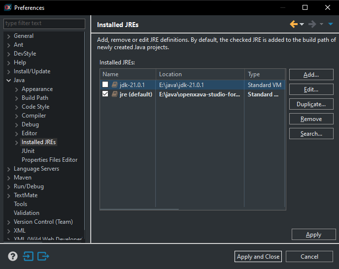
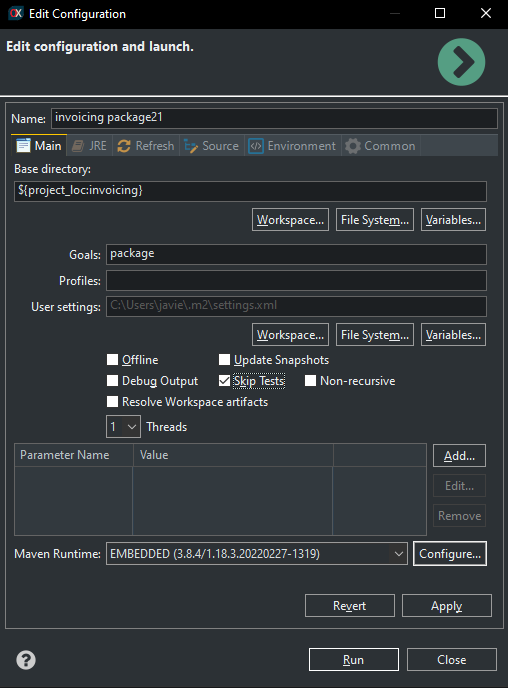
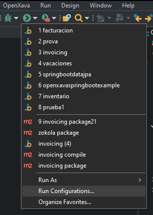
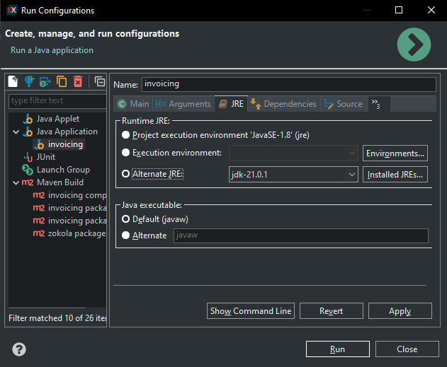

By default, OpenXava is compiled with Java 8, so you can use OpenXava with
Java 8, 11 or 17. Moroever, since v7.2 OpenXava supports Java 21,
therefore you can compile and run your OpenXava applications with Java 21
and enjoy their new features.
To use Java 21 in your application
you have to change the compile level in the pom.xml of your
project, thus:
<maven.compiler.source>21</maven.compiler.source>
<maven.compiler.target>21</maven.compiler.target>
The below instructions are for
configuring OpenXava Studio to use Java 21. Obviously, you should have JDK
21 installed on your computer.
Add Java 21 to OpenXava Studio
The first step is to indicate to
OpenXava Studio where the JDK 21 is installed. For that, go to Window
> Preferences > Java > Installed JREs, and there add the
JDK 21 to the Installed JREs list:
It's not needed that you mark it
as the defaul JRE.
Configure to compile with Java 21
You should define your own Maven
configuration to compile, package or install your application and indicate
in that configuration that you're going to use Java 21. Use that
configuration for compile or package your application. That is, do a right
mouse click on your project, and choose Run As > Maven build...,
then in the dialog create a configuration to call the goal package
and named it yourproject package21 (for example), in this way:

The go to the JRE tab and in Alternate
JRE option, choose the JDK 21 as JRE, thus:

Now click on Run and your
application will be compiled and packaged using Java 21. From now on, you
can use the compile21 configuration you have created to compile
with Java 21.
Configure to run with Java 21
You have to edit your run
configuration to use the JDK 21 to run your application. For that click on
the Run Configuration... menu entry:

Choose your application on the
right, on the Java Application section. Then go to the JRE tab and in Alternate
JRE choose the JDK 21, like this:

Click on Run, and your
application will run using Java 21.
Note: Beware, because if you do a
Maven > Upgrade Project on your project at any moment, your
project will be marked with errors. Don't panic, just do a right click on
your project, and choose Properties > Java Build Path >
Libraries. There remove the Java 18 JRE library and add the Java 21
library, with the Add Library... button.